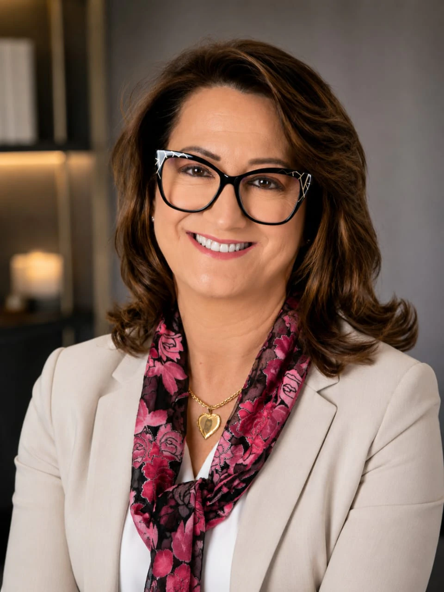

É resultado de uma trajetória construída ao longo da vida, marcada pelo estudo contínuo, pela convivência com diferentes histórias humanas e pela compreensão de que, por trás de toda dor, existe também um potencial extraordinário de transformação.
Ao longo dessa caminhada, tornou-se evidente que o sofrimento não define uma pessoa. O que a define é sua capacidade de atribuir novos significados às experiências vividas, desenvolver recursos internos para enfrentar as adversidades e reconstruir a própria história com consciência, coragem e esperança.
Acreditamos que a maior força do ser humano não está em nunca cair, mas em descobrir que pode se reconstruir todas as vezes que a vida exigir.
Essa capacidade de reconstrução nasce da resiliência.
Uma resiliência que não significa suportar tudo em silêncio, mas reconhecer limites, acolher emoções, aprender com as experiências e fortalecer a mente para enfrentar os desafios sem perder a própria essência.
Por isso, acreditamos que a saúde mental não começa no adoecimento.
Ela começa na prevenção;Na consciência;No autoconhecimento;No autocuidado.
Na capacidade de desenvolver uma mente mais forte, flexível e preparada para lidar com as incertezas, as mudanças e as exigências da vida.
A ciência demonstra que mente e corpo caminham juntos. Cada pensamento, emoção e experiência deixa marcas na biologia, influencia comportamentos e molda a forma como enfrentamos o mundo.
Mas acreditamos que existe uma dimensão ainda mais profunda.
O ser humano é uma integração entre mente, corpo e espiritualidade.
Quando essas dimensões estão desconectadas, surgem o vazio, o esgotamento e a perda de sentido real. Quando se reconectam, despertam equilíbrio, propósito, pertencimento e uma nova forma de viver.
É dessa compreensão integrativa que nasce a Re.Memora.
Unimos conhecimento, desenvolvimento humano e práticas integrativas para promover uma transformação que vai além da informação. Nosso compromisso é fortalecer pessoas para que desenvolvam recursos emocionais, cognitivos e espirituais capazes de enfrentar as adversidades, superar desafios, reconstruir caminhos e viver com mais consciência, equilíbrio e significado.
Acreditamos que ninguém é definido pelas dificuldades que enfrenta.
Cada ser humano possui uma capacidade extraordinária de desconstruir padrões que limitam seu crescimento e reconstruir novas formas de pensar, sentir e agir.
É nesse movimento que a verdadeira transformação acontece.
Mais do que cuidar do sofrimento, queremos fortalecer a capacidade humana de florescer mesmo diante das adversidades.
Mais do que oferecer conhecimento, queremos despertar consciência.
Mais do que ensinar autocuidado, queremos inspirar uma nova relação das pessoas consigo mesmas.
Porque uma mente fortalecida transforma escolhas.
Escolhas transformam comportamentos.
Comportamentos transformam vidas.
E vidas transformadas têm o poder de transformar famílias, equipes, instituições e toda a sociedade.
Esse é o compromisso da Re.Memora.
Fortalecer a mente. Reconectar o ser humano consigo mesmo.
E recordar a cada pessoa aquilo que, nos momentos de maior sofrimento, tende a ser esquecido: o cérebro e a mente possuem uma extraordinária capacidade de adaptação e reconstrução. A mente é o terreno onde germinam pensamentos, emoções e escolhas; aquilo que cultivamos nela molda quem nos tornamos. Dentro de cada ser humano existe o potencial de reconstruir a própria história, ressignificar experiências e seguir em frente com mais consciência, equilíbrio, presença e propósito.
Missão
Promover a transformação humana por meio da integração entre ciência, desenvolvimento humano e uma visão integral do ser, fortalecendo a conexão entre mente, corpo e espírito. Inspirar pessoas, equipes e organizações a desenvolverem consciência, saúde mental, capacidade resiliente e autocuidado, despertando a energia interior que impulsiona a superação, a reconstrução e a autotransformação diante das adversidades.
Visão
Acreditamos que toda transformação começa na consciência. Por isso, nossa visão é contribuir para uma sociedade em que a saúde mental deixe de ser resposta ao adoecimento e se torne fundamento da vida, da educação, do trabalho e das relações humanas. Queremos inspirar uma cultura em que fortalecer a mente, cuidar das emoções e desenvolver o potencial humano sejam escolhas conscientes, capazes de reconstruir pessoas, transformar organizações e deixar um legado de humanidade.
Fortalecer a mente. Reconectar o ser humano consigo mesmo.Fortalecer a mente. Reconectar o ser humano consigo mesmo.
Valores
Integralidade do Ser
Compreendemos o ser humano como uma unidade inseparável entre mente, corpo e espírito, reconhecendo que o verdadeiro cuidado acontece quando todas essas dimensões são fortalecidas em equilíbrio.
Humanização
Valorizamos cada pessoa em sua singularidade, promovendo relações pautadas na escuta, no respeito, na empatia, na compaixão e no acolhimento.
Resiliência
Acreditamos na extraordinária capacidade humana de enfrentar adversidades, ressignificar experiências, reconstruir caminhos e florescer com mais consciência, equilíbrio e propósito.
Autotransformação
Todo ser humano possui um potencial de crescimento e renovação. Incentivamos o desenvolvimento contínuo, a desconstrução de padrões e a construção de novas possibilidades de viver, sentir e cuidar.
Autocuidado Consciente
Entendemos o autocuidado como um compromisso diário consigo mesmo, essencial para preservar a saúde mental, fortalecer o equilíbrio emocional e sustentar relações e práticas profissionais mais saudáveis.
Ciência com Propósito
Unimos Neurociência, Neuropsicanálise, Psicanálise Clínica, desenvolvimento humano e práticas integrativas em uma abordagem transdisciplinar, fundamentada na ciência, na ética e na consciência, para promover saúde mental, desenvolvimento humano e transformação de vida sustentável.
Energia Vital
Reconhecemos que cada ser humano é movido por uma energia interior que impulsiona escolhas, relações, criatividade e propósito. Fortalecer essa energia significa favorecer vitalidade, esperança, equilíbrio e sentido para a vida.
Prevenção e Consciência
Acreditamos que a promoção da saúde e o fortalecimento da consciência são caminhos mais humanos e eficazes do que agir apenas diante do adoecimento.
Ética e Responsabilidade
Atuamos com integridade, responsabilidade, respeito à diversidade, confidencialidade, bioética e compromisso com o desenvolvimento humano e social.
Legado Transformador
Trabalhamos para inspirar mudanças que ultrapassem o indivíduo, fortalecendo famílias, equipes, organizações e comunidades, contribuindo para uma cultura de cuidado, consciência e valorização da vida.

Projeto
Ecos da Saúde Mental
Um conceito-matriz da Re.Memora para conscientizar, cuidar e reconstruir o humano.
Ecos da Saúde Mental
Manifesto
Ecos da Saúde Mental nasce de uma compreensão essencial: toda pessoa carrega uma história, experiências, emoções, memórias, relações e formas singulares de existir — e aquilo que não é compreendido, cuidado ou elaborado pode continuar reverberando silenciosamente na vida.
Por isso, a saúde mental não pode ser compreendida apenas pela presença ou ausência de transtornos, síndromes ou sofrimento psíquico.
É preciso olhar para o ser humano em sua integralidade.
Ecos da Saúde Mental é um projeto-matriz da Re.Memora que dá origem a programas, ações e experiências construídos de acordo com as necessidades, demandas e particularidades de diferentes públicos, organizações, instituições e comunidades.
Cada programa nasce de uma escuta cuidadosa da realidade e é desenvolvido para responder às demandas identificadas, respeitando a singularidade de cada contexto e preservando a essência da Re.Memora:
olhar para o ser humano antes de olhar para o problema.
Sua proposta é transformar a saúde mental em uma experiência de informação, conscientização, cuidado e desenvolvimento humano, criando espaços que favoreçam o conhecimento, a reflexão, o diálogo, o autocuidado e a construção de recursos pessoais e coletivos.
Mais do que transmitir informações sobre sofrimento psíquico, o projeto busca ampliar a consciência sobre o ser humano, suas emoções, seus comportamentos, suas relações e suas possibilidades de transformação.
Porque informação esclarece.
Consciência desperta.
Cuidado acolhe.
Conhecimento aplicado transforma.
Objetivo geral
Do projeto
Promover conscientização, educação e cuidado em saúde mental por meio da criação de programas e ações adaptados às necessidades de diferentes públicos e contextos, ampliando a compreensão sobre o ser humano, fortalecendo recursos pessoais e coletivos e favorecendo processos de prevenção, cuidado, desenvolvimento e reconstrução humana.
Ecos da Saúde Mental
Objetivos específicos
Ampliar o conhecimento sobre saúde mental, emoções, comportamentos, relações e fatores que influenciam o bem-estar humano.
Transformar informação em consciência, favorecendo uma compreensão mais profunda sobre si, sobre o outro e sobre as diferentes formas de sofrimento e vulnerabilidade.
Prevenir o agravamento do sofrimento, estimulando o reconhecimento de sinais, necessidades e fatores de risco e proteção em saúde mental.
Fortalecer o autocuidado, a autopercepção, a autocompaixão, os limites saudáveis e a responsabilidade individual e coletiva pelo cuidado.
Desenvolver recursos emocionais e relacionais que favoreçam melhores formas de enfrentar desafios, mudanças, perdas, conflitos e situações de sofrimento.
Estimular ambientes mais saudáveis, humanos, acolhedores e conscientes nas famílias, organizações, instituições, comunidades e demais espaços de convivência.
Valorizar quem cuida, reconhecendo que o cuidado oferecido ao outro também exige atenção, proteção e cuidado com quem o realiza.
Reduzir estigmas e preconceitos relacionados à saúde mental, favorecendo uma cultura de diálogo, acolhimento e busca responsável por ajuda.
Respeitar a singularidade de cada público, construindo programas a partir da escuta das necessidades reais de cada grupo, organização ou comunidade.
Integrar ciência, conhecimento, consciência e experiência humana, traduzindo conteúdos relevantes em práticas que possam fazer sentido na vida cotidiana.
Fortalecer a capacidade de adaptação e reconstrução, reconhecendo o potencial humano de aprender, desenvolver novos recursos e construir novas possibilidades ao longo da vida.
Favorecer relações mais conscientes, estimulando o cuidado consigo, com o outro e com os espaços coletivos dos quais fazemos parte.
Contribuir para uma cultura de saúde mental, na qual cuidar não seja apenas responder ao sofrimento depois que ele aparece, mas também criar condições para prevenção, desenvolvimento e qualidade de vida.
Ecos da Saúde Mental
Uma matriz para diferentes caminhos.
A força de Ecos da Saúde Mental está justamente em não ser uma proposta única e rígida. É uma matriz de criação.
Dela podem nascer programas diferentes para diferentes realidades:
cuidadores, profissionais, empresas, escolas, famílias, comunidades, instituições, lideranças, jovens, idosos e outros públicos, sempre respeitando suas necessidades e características.
Cada programa pode ter sua própria linguagem, metodologia, objetivos específicos, duração e forma de aplicação.
Mas todos preservam a mesma essência:
Informar para esclarecer.
Conscientizar para despertar.
Cuidar para fortalecer.
Reconstruir para transformar.
Ecos da Saúde Mental
O compromisso
Ecos da Saúde Mental acredita que transformar vidas começa quando o ser humano deixa de ser visto apenas pelo que apresenta e passa a ser reconhecido em sua história, sua singularidade, sua potência e suas possibilidades.
Por isso, não queremos apenas falar sobre saúde mental.
Queremos criar experiências que permitam compreender, reconhecer, cuidar e transformar.
Porque cada demanda é única. Cada público tem sua realidade. Cada contexto produz seus próprios ecos. E cada pessoa possui uma história que merece ser escutada.
Ecos da Saúde Mental existe para fazer esses ecos serem ouvidos antes que se transformem em silêncio, sofrimento ou adoecimento.
Para levar informação que esclarece, conscientização que desperta, cuidado que acolhe e conhecimento que transforma.
E, sobretudo, para contribuir com a formação de pessoas mais conscientes, mais preparadas e mais cuidadosas consigo mesmas, com os outros e com o mundo que compartilham.
ECOS DA SAÚDE MENTALUm projeto para conscientizar, cuidar e reconstruir o humano.
Programa
O cuidado com o cuidador
O Cuidado com o Cuidador
Manifesto
Existe uma verdade que habita todos os seres humanos.
Uma verdade que nem sempre encontra palavras, mas que se manifesta no silêncio, no cansaço, nas emoções reprimidas, nas perdas, nos medos e nas marcas deixadas pelas experiências da vida.
Todos nós carregamos ecos.
Ecos de alegrias e conquistas.
Ecos de desafios, despedidas e recomeços.
Ecos que moldam nossa forma de pensar, sentir, agir e nos relacionar com o mundo.
Cada ser humano possui uma história.
Uma história que, muitas vezes, permanece invisível aos olhos de quem está ao redor.
Porque ninguém conhece as batalhas que o outro enfrenta em silêncio.
Entre todos aqueles que convivem diariamente com essas batalhas, existe um grupo que, além de carregar a própria história, escolheu dedicar sua vida ao cuidado de outras pessoas.
São profissionais que acolhem a dor, enfrentam perdas, confortam famílias, tomam decisões difíceis e sustentam, diariamente, a esperança de quem precisa de cuidado.
Mas, antes de serem profissionais, são seres humanos.
Sentem.Sofrem.Choram.Cansam.E também precisam ser cuidados.
Durante muito tempo, acreditou-se que força significava suportar tudo em silêncio.
Que resiliência era nunca demonstrar fragilidade.
Que cuidar do outro exigia esquecer de si mesmo.
Mas essa não é a verdadeira força.
A verdadeira força nasce quando reconhecemos nossa humanidade.
Quando compreendemos que vulnerabilidade não é fraqueza, mas parte da condição humana.
Quando entendemos que pedir ajuda, descansar, acolher as próprias emoções e cuidar de si são atitudes de coragem.
Na Re.Memora, acreditamos que todo ser humano possui uma extraordinária capacidade de reconstrução.
Acreditamos que a mente pode aprender novos caminhos.
Que o corpo responde ao cuidado que recebe.
Que o espírito encontra força quando existe propósito.
E que existe, em cada pessoa, uma energia vital capaz de impulsionar mudanças profundas, mesmo depois das maiores adversidades.
Nenhuma história precisa terminar onde a dor começou.
Todo ser humano pode desconstruir padrões que limitam sua vida, reconstruir significados, fortalecer sua capacidade resiliente e reencontrar equilíbrio entre mente, corpo e espírito.
É dessa convicção que nasce o programa O Cuidado com o Cuidador.
Um programa que reconhece que o cuidado começa muito antes do atendimento ao outro.
Começa no encontro consigo mesmo.
Começa quando cada pessoa compreende que autocuidado não é egoísmo.
É responsabilidade. É prevenção. É respeito pela própria existência.
É a base que sustenta relações mais saudáveis, equipes mais fortes e organizações mais humanas.
Mais do que falar sobre saúde mental, este projeto convida cada participante a lembrar de quem realmente é.
A reconhecer sua própria força. A acolher sua vulnerabilidade. A fortalecer sua mente. A cuidar do seu corpo. A nutrir seu espírito. A despertar a energia que o move.
E a descobrir que a maior capacidade humana não é evitar as adversidades, mas transformar cada experiência em uma oportunidade de crescimento, consciência e renovação.
Porque toda transformação começa dentro de cada indivíduo.
E quando um ser humano se fortalece, fortalece também sua família, sua equipe, sua comunidade e todos aqueles que são alcançados pelo seu cuidado.
É por isso que acreditamos que cuidar de quem cuida é muito mais do que preservar um profissional.
É fortalecer o ser humano que existe por trás de cada função, de cada uniforme, de cada história e de cada vida.
Porque, quando os ecos da saúde mental encontram espaço para serem reconhecidos, deixam de ser silêncio.
Transformam-se em consciência. Em resiliência. Em esperança. Em autotransformação. E em uma nova maneira de viver, cuidar e existir.
Objetivo geral
Do programa
Despertar em indivíduos e profissionais que atuam na saúde a consciência de que a saúde mental é um processo contínuo de prevenção, fortalecimento e desenvolvimento humano, promovendo o autocuidado, o autoconhecimento, a integração entre mente, corpo e espírito e o fortalecimento da capacidade resiliente. Inspirado na essência da Re.Memora e do projeto Ecos da Saúde Mental, o programa O Cuidado com o Cuidador busca reconectar cada pessoa à energia vital que impulsiona a vida, despertando seu potencial de autotransformação para enfrentar, compreender e ressignificar as adversidades com equilíbrio, propósito, presença e humanidade, contribuindo para a construção de pessoas mais fortalecidas, equipes mais saudáveis e organizações comprometidas com uma cultura permanente de cuidado.
O Cuidado com o Cuidador
Objetivos específicos
Despertar a consciência humana antes da consciência profissional, promovendo a reflexão sobre a importância da saúde mental, do autocuidado e da prevenção, para que cada indivíduo reconheça que cuidar de si é o primeiro passo para cuidar do outro com presença, equilíbrio e humanidade.
Fortalecer a capacidade resiliente e a força interior existente em cada ser humano, desenvolvendo recursos emocionais, cognitivos e comportamentais que possibilitem enfrentar desafios, acolher o sofrimento, ressignificar experiências e transformar adversidades em oportunidades de crescimento, reconstrução e evolução pessoal.
Favorecer o desenvolvimento do autoconhecimento e da inteligência emocional, estimulando a reconexão entre mente, corpo e espírito, fortalecendo a autoestima, a autocompaixão, o sentido de vida e a energia vital que impulsiona escolhas mais conscientes, saudáveis e alinhadas ao propósito de viver e cuidar.
Integrar conhecimentos da neurociência, neuropsicanálise, desenvolvimento humano e práticas integrativas, oferecendo estratégias e recursos para prevenção do adoecimento psíquico, manejo do estresse, fortalecimento da saúde mental e desenvolvimento da capacidade de adaptação, reconstrução e crescimento diante das adversidades.
Inspirar uma transformação na cultura do cuidado, sensibilizando indivíduos, profissionais e instituições para compreender que a valorização da saúde mental, o fortalecimento da capacidade humana de autotransformação e a promoção da conexão entre mente, corpo e espírito constituem pilares essenciais para ambientes mais humanizados, equipes mais resilientes e uma assistência mais ética, segura, sustentável e centrada na vida.
“Que nenhum cuidador se perca de si enquanto cuida do outro. Porque quem cuida também precisa ser visto, ouvido e acolhido.”
O Cuidado com o Cuidador O Cuidado com o CuidadorO Cuidado com o Cuidador O Cuidado com o Cuidador

BF
Sobre Beatriz Fava
Beatriz Fava é PhD em Neuropsicanálise, doutora em Psicanálise Clínica, mestre em Psicanálise Clínica, administradora com MBA em Consultoria Executiva Empresarial, especialista em Neurociência e Comportamento, especialista em Gestão de Pessoas, treinadora e especialista em Desenvolvimento Humano de Alto Impacto.
Sua trajetória profissional nasceu nas bases de diferentes profissões, funções e áreas de atuação. Desde o início, escolheu o conhecimento como caminho, o aperfeiçoamento como compromisso e a superação como força para avançar. Ao longo de quatro décadas, construiu uma trajetória marcada por desafios, experiências e conquistas, consolidando uma formação multidisciplinar que integra Administração, Gestão de Pessoas, Neurociência, Psicanálise, Neuropsicanálise e Desenvolvimento Humano.
É fundadora da Re.Memora e idealizadora do projeto-matriz Ecos da Saúde Mental.
Dessa base emergem programas essenciais:
Palestra Magna: Ecos da Saúde Mental – O Cuidado com o Cuidador, com workshop.
Palestra: Ecos da Saúde Mental da Mulher Contemporânea.
Seu trabalho parte de uma convicção que acompanha toda a sua trajetória: todo ser humano possui potencial para aprender, transformar-se, reconstruir caminhos e desenvolver novas possibilidades para a própria vida.
Encontre respostas para as principais dúvidas sobre a Re.Memora, seus projetos e programas.
A Re.Memora é uma marca voltada à saúde mental, ao desenvolvimento humano e à reconstrução humana, integrando conhecimento, consciência, prevenção, autocuidado e uma visão integral do ser humano.
Ecos da Saúde Mental é um projeto da Re.Memora que dá origem a programas, ações e experiências desenvolvidos de acordo com as necessidades de diferentes públicos, organizações, instituições e comunidades.
É um programa desenvolvido a partir do Ecos da Saúde Mental, direcionado ao cuidado de quem cuida. A proposta é fortalecer a saúde mental, o autocuidado, o autoconhecimento e a capacidade de enfrentar e ressignificar adversidades.
As ações podem ser desenvolvidas para diferentes públicos e contextos, como profissionais, empresas, escolas, famílias, comunidades, instituições, lideranças, jovens, idosos e outros grupos, respeitando as necessidades e características de cada realidade.
Sim. Cada programa pode ter linguagem, metodologia, objetivos, duração e forma de aplicação próprias, de acordo com as necessidades identificadas, preservando a essência da Re.Memora.
Não. A proposta também valoriza prevenção, conscientização e fortalecimento da saúde mental, buscando ampliar recursos pessoais e coletivos antes que o cuidado seja necessário apenas como resposta ao adoecimento.
Entre em contato com a Re.Memora para apresentar sua necessidade e conversar sobre o público e o contexto. A partir dessa compreensão, poderá ser avaliada uma proposta adequada à realidade apresentada.